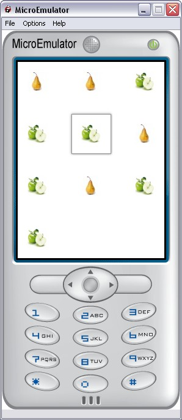

Mosaic prototype

Display a mosaic of items with icons and labels (multi-pages).
Data fields
- MFString images - Icon of each item of mosaic
- MFString labels - Label of each item of mosaic
- MFString defaultImages - Default icon if it is missing for an item of mosaic
Style fields
- SFVec2f itemsTrs - General translation of all the mosaic proto (to match with Carrousel itemTrs parameter)
- SFVec2f containerSize - Size of the area where the proto is displayed (containerSize <= screenSize)
- SFVec2f size - Size of the icon in Mosaic (each icon has the same size)
- MFString style - Path to the CSS node associated to Mosaic proto
- SFInt32 deltaMin - Minimum space between two icons (same horizontal and vertical)
Exposed Fields
- SFBool enable - Enable/disable MenuBar Buttons
- SFInt32 index - The current element in Mosaic
Event in
- SFBool update - Update the Mosaic and position its index on the given element
- SFBool startZoom - Set to TRUE to zoom in and to FALSE to zoom out. It set to FALSE by default: the mosaic is not visible
Event Out
- SFBool zoomFinished - Set to TRUE on end of zoom in and to FALSE on end of zoom out
- SFString activeKey - Send touchCursor event to upper prototypes
#
MosaicMatrix,
TouchCursor